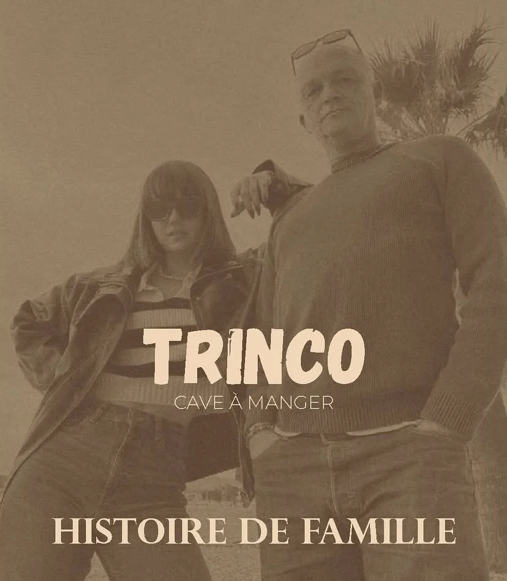
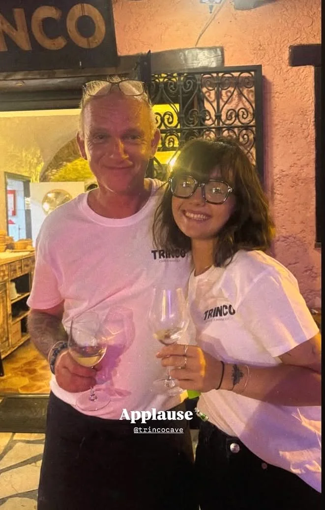

Cagnes-sur-Mer · 6 rue Général Bérenger
Cave à Manger — Histoire de famille


Qui sommes-nous
Elle commence en salle à 17 ans. Un client lui demande la différence entre chardonnay et sauvignon blanc. Elle ne sait pas répondre. Ce soir-là, elle décide que ça ne se reproduira plus. Formation d'œnologie, Monaco, Australie, Maurice — Charlotte revient avec une cave entière dans la tête et l'envie de la partager.
Ancien logisticien chez Sisco, son rêve : un foodtruck avec de l'effiloché d'agneau. Le genre de rêve qu'on n'abandonne pas. Quand sa fille lui parle de la voûte en pierre de la rue Général Bérenger, il dit oui — l'effiloché peut attendre, l'aventure, non.
Cave à vins pour Charlotte, bonne viande pour Jean-Mi. Ils ont tout refait de leurs mains — les tables, les planches en bois, et quelques autres surprises. Trinco, c'est ce qu'on obtient quand deux rêves s'accordent devant une voûte en pierre.
"On a tout fait de nos mains. Même les trucs qu'on aurait pas dû."
Ce qu'on mange & ce qu'on boit
Des planches qui partagent, des assiettes qui surprennent, des vins qui racontent. Tout change selon l'arrivage — et c'est exprès.
L'endroit
On vous attend
Adresse
6 rue Général Bérenger
06800 Cagnes-sur-Mer
Téléphone
Horaires